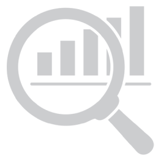
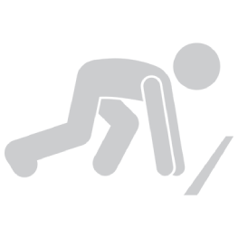

Дневни анализи

Курс за Почетници
Напреден Курс
Кратки видеа (Shorts)
Крипто Калкулатор
Почетна Инвестиција (USD):
Почетна Цена на Коин (USD):
Проектирана Цена на Коин (USD):
Calculate
Проектирана Вредност во USD
0